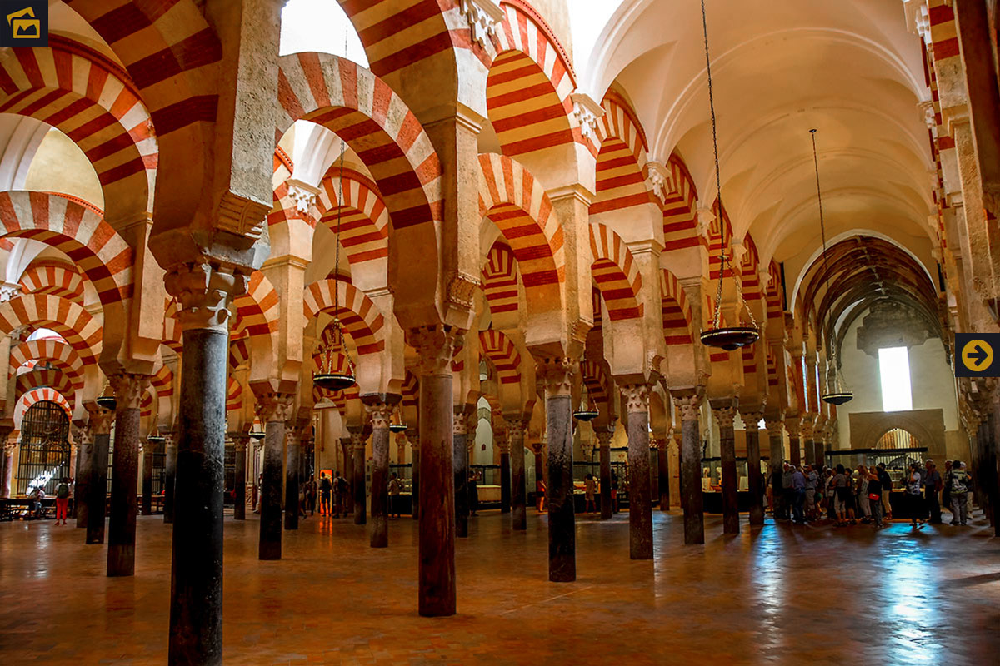
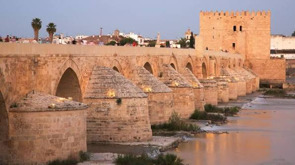

Mezquita Catedral
Un simbolo de Córdoba y una de las
joyas arquitectónicas más importantes
del mundo.
Bienvenidos a Córdoba
Córdoba es una ciudad llena de historia, arte y tradición. Pasear por sus calles es descubir
un legado único, resultado del encuentro entre culturas que han dejado su huella en cada rincón
Lugares imprescindibles

Mezquita Catedral
Un simbolo de Córdoba y una de las
joyas arquitectónicas más importantes
del mundo.

Puente Romano
Un puente con más de dos mil años
de historia que une el pasado y el presente
de la ciudad.

Patios de Córdoba
Una tradición única que llena de color
y vida las calles de Córdoba, declarada
Patrimonio Inmaterial de la Humanidad.
Planifica tu visita